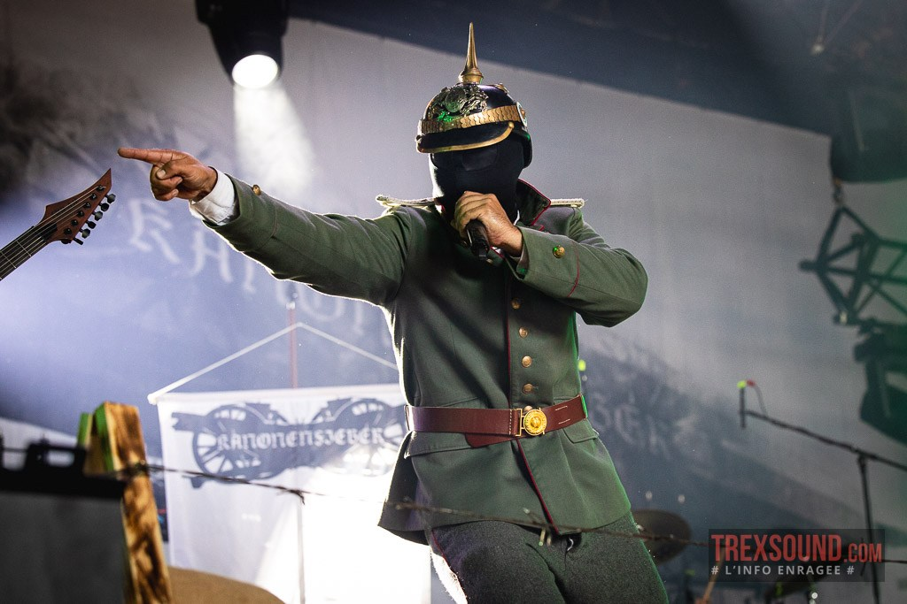

Kanonenfieber est un projet de metal extrême originaire d’Allemagne, s’inspirant directement des événements et de l’atmosphère de la Première Guerre mondiale.
Le groupe se distingue par une approche musicale sombre et immersive, mettant l’accent sur l’horreur et la brutalité du conflit plutôt que sur une vision héroïque.
Musicalement, Kanonenfieber mélange des influences black et death metal afin de créer une ambiance lourde et oppressante. Les compositions sont marquées par des passages agressifs et une atmosphère froide, renforçant le sentiment de chaos et de désolation évoqué par les thèmes abordés.
À travers son univers visuel et sonore, Kanonenfieber propose une expérience intense qui dépasse la simple écoute musicale. Le projet s’inscrit comme une œuvre conceptuelle forte, attirant les amateurs de metal extrême sensibles aux ambiances historiques et narratives.